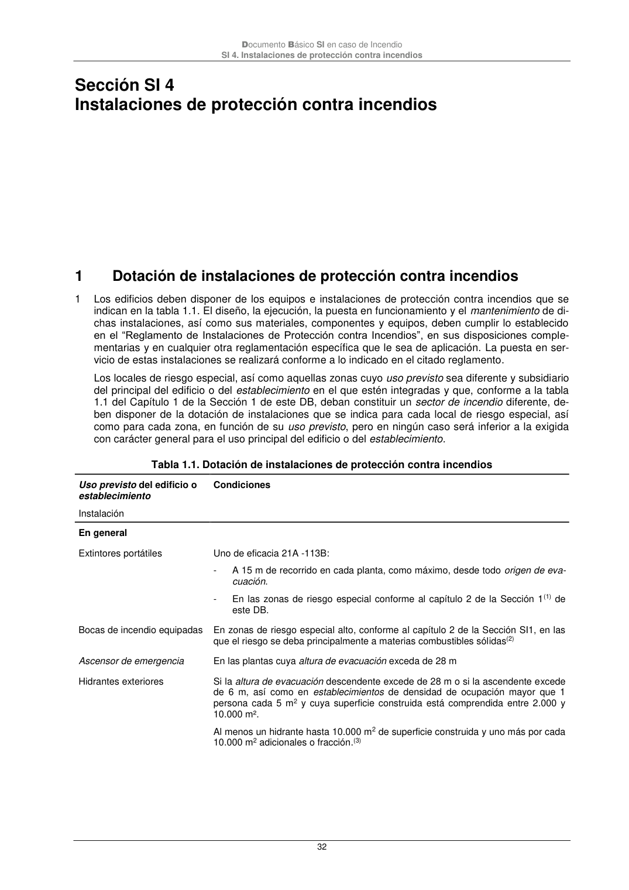
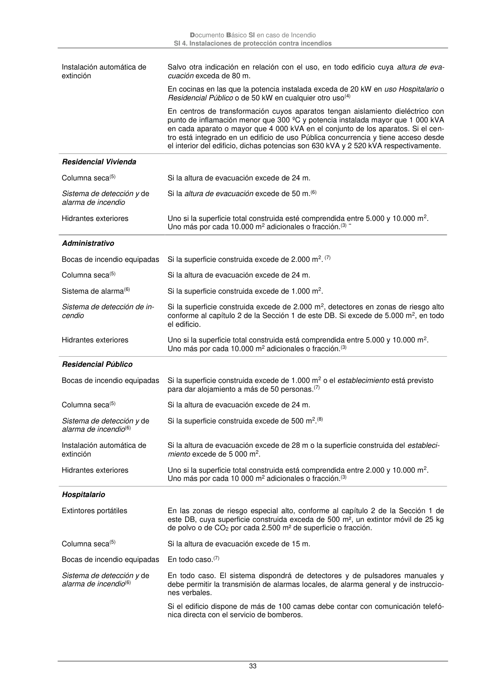
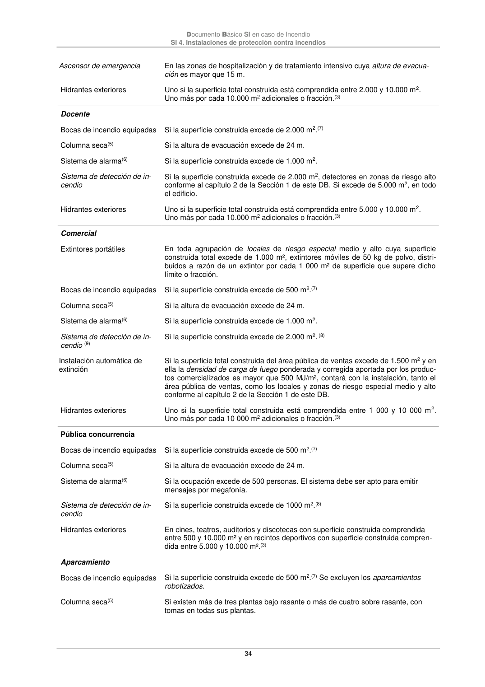
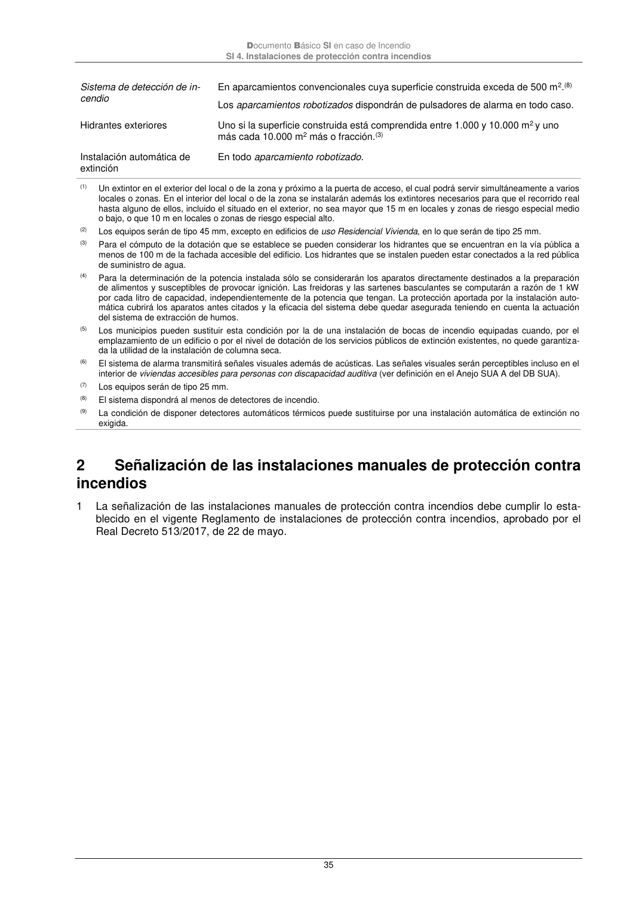

DB-SI · 1 Dotación de instalaciones de protección contra incendios · versión 2025-03-04 · capa oficial
Formatos: JSON compacto · Markdown · PDF fuente
Ámbito del documento · texto del ámbito · documento y tablas
ID técnico a0073 · PDF pág. 32-35 · jerarquía no validada por persona · contrastado con el literal de la página 32 (marcador PDF); no validado por persona · padre: a0072
Dotación de instalaciones de protección contra incendios 1 Los edificios deben disponer de los equipos e instalaciones de protección contra incendios que se indican en la tabla 1.1. El diseño, la ejecución, la puesta en funcionamiento y el mantenimiento de di- chas instalaciones, así como sus materiales, componentes y equipos, deben cumplir lo establecido en el “Reglamento de Instalaciones de Protección contra Incendios”, en sus disposiciones comple- mentarias y en cualquier otra reglamentación específica que le sea de aplicación. La puesta en ser- vicio de estas instalaciones se realizará conforme a lo indicado en el citado reglamento. Los locales de riesgo especial, así como aquellas zonas cuyo uso previsto sea diferente y subsidiario del principal del edificio o del establecimiento en el que estén integradas y que, conforme a la tabla 1.1 del Capítulo 1 de la Sección 1 de este DB, deban constituir un sector de incendio diferente, de- ben disponer de la dotación de instalaciones que se indica para cada local de riesgo especial, así como para cada zona, en función de su uso previsto, pero en ningún caso será inferior a la exigida con carácter general para el uso principal del edificio o del establecimiento. Tabla 1.1. Dotación de instalaciones de protección contra incendios Uso previsto del edificio o establecimiento Instalación Condiciones En general Extintores portátiles Uno de eficacia 21A -113B: - A 15 m de recorrido en cada planta, como máximo, desde todo origen de eva- cuación. - En las zonas de riesgo especial conforme al capítulo 2 de la Sección 1(1) de este DB. Bocas de incendio equipadas En zonas de riesgo especial alto, conforme al capítulo 2 de la Sección SI1, en las que el riesgo se deba principalmente a materias combustibles sólidas(2) Ascensor de emergencia En las plantas cuya altura de evacuación exceda de 28 m Hidrantes exteriores Si la altura de evacuación descendente excede de 28 m o si la ascendente excede de 6 m, así como en establecimientos de densidad de ocupación mayor que 1 persona cada 5 m2 y cuya superficie construida está comprendida entre 2.000 y 10.000 m². Al menos un hidrante hasta 10.000 m2 de superficie construida y uno más por cada 10.000 m2 adicionales o fracción.(3) Documento Básico SI en caso de Incendio SI 4. Instalaciones de protección contra incendios 33 Instalación automática de extinción Salvo otra indicación en relación con el uso, en todo edificio cuya altura de eva- cuación exceda de 80 m. En cocinas en las que la potencia instalada exceda de 20 kW en uso Hospitalario o Residencial Público o de 50 kW en cualquier otro uso(4) En centros de transformación cuyos aparatos tengan aislamiento dieléctrico con punto de inflamación menor que 300 ºC y potencia instalada mayor que 1 000 kVA en cada aparato o mayor que 4 000 kVA en el conjunto de los aparatos. Si el cen- tro está integrado en un edificio de uso Pública concurrencia y tiene acceso desde el interior del edificio, dichas potencias son 630 kVA y 2 520 kVA respectivamente. Residencial Vivienda Columna seca(5) Si la altura de evacuación excede de 24 m. Sistema de detección y de alarma de incendio Si la altura de evacuación excede de 50 m.(6) Hidrantes exteriores Uno si la superficie total construida esté comprendida entre 5.000 y 10.000 m2. Uno más por cada 10.000 m2 adicionales o fracción.(3) ¨ Administrativo Bocas de incendio equipadas Si la superficie construida excede de 2.000 m2. (7) Columna seca(5) Si la altura de evacuación excede de 24 m. Sistema de alarma(6) Si la superficie construida excede de 1.000 m2. Sistema de detección de in- cendio Si la superficie construida excede de 2.000 m2, detectores en zonas de riesgo alto conforme al capítulo 2 de la Sección 1 de este DB. Si excede de 5.000 m2, en todo el edificio. Hidrantes exteriores Uno si la superficie total construida está comprendida entre 5.000 y 10.000 m2. Uno más por cada 10.000 m2 adicionales o fracción.(3) Residencial Público Bocas de incendio equipadas Si la superficie construida excede de 1.000 m2 o el establecimiento está previsto para dar alojamiento a más de 50 personas.(7) Columna seca(5) Si la altura de evacuación excede de 24 m. Sistema de detección y de alarma de incendio(6) Si la superficie construida excede de 500 m2.(8) Instalación automática de extinción Si la altura de evacuación excede de 28 m o la superficie construida del estableci- miento excede de 5 000 m2. Hidrantes exteriores Uno si la superficie total construida está comprendida entre 2.000 y 10.000 m2. Uno más por cada 10 000 m2 adicionales o fracción.(3) Hospitalario Extintores portátiles En las zonas de riesgo especial alto, conforme al capítulo 2 de la Sección 1 de este DB, cuya superficie construida exceda de 500 m², un extintor móvil de 25 kg de polvo o de CO2 por cada 2.500 m² de superficie o fracción. Columna seca(5) Si la altura de evacuación excede de 15 m. Bocas de incendio equipadas En todo caso.(7) Sistema de detección y de alarma de incendio(6) En todo caso. El sistema dispondrá de detectores y de pulsadores manuales y debe permitir la transmisión de alarmas locales, de alarma general y de instruccio- nes verbales. Si el edificio dispone de más de 100 camas debe contar con comunicación telefó- nica directa con el servicio de bomberos. Documento Básico SI en caso de Incendio SI 4. Instalaciones de protección contra incendios 34 Ascensor de emergencia En las zonas de hospitalización y de tratamiento intensivo cuya altura de evacua- ción es mayor que 15 m. Hidrantes exteriores Uno si la superficie total construida está comprendida entre 2.000 y 10.000 m2. Uno más por cada 10.000 m2 adicionales o fracción.(3) Docente Bocas de incendio equipadas Si la superficie construida excede de 2.000 m2.(7) Columna seca(5) Si la altura de evacuación excede de 24 m. Sistema de alarma(6) Si la superficie construida excede de 1.000 m2. Sistema de detección de in- cendio Si la superficie construida excede de 2.000 m2, detectores en zonas de riesgo alto conforme al capítulo 2 de la Sección 1 de este DB. Si excede de 5.000 m2, en todo el edificio. Hidrantes exteriores Uno si la superficie total construida está comprendida entre 5.000 y 10.000 m2. Uno más por cada 10.000 m2 adicionales o fracción.(3) Comercial Extintores portátiles En toda agrupación de locales de riesgo especial medio y alto cuya superficie construida total excede de 1.000 m², extintores móviles de 50 kg de polvo, distri- buidos a razón de un extintor por cada 1 000 m² de superficie que supere dicho límite o fracción. Bocas de incendio equipadas Si la superficie construida excede de 500 m2.(7) Columna seca(5) Si la altura de evacuación excede de 24 m. Sistema de alarma(6) Si la superficie construida excede de 1.000 m2. Sistema de detección de in- cendio (9) Si la superficie construida excede de 2.000 m2. (8) Instalación automática de extinción Si la superficie total construida del área pública de ventas excede de 1.500 m2 y en ella la densidad decarga de fuego ponderada y corregida aportada por los produc- tos comercializados es mayor que 500 MJ/m², contará con la instalación, tanto el área pública de ventas, como los locales y zonas de riesgo especial medio y alto conforme al capítulo 2 de la Sección 1 de este DB. Hidrantes exteriores Uno si la superficie total construida está comprendida entre 1 000 y 10 000 m2. Uno más por cada 10 000 m2 adicionales o fracción.(3) Pública concurrencia Bocas de incendio equipadas Si la superficie construida excede de 500 m2.(7) Columna seca(5) Si la altura de evacuación excede de 24 m. Sistema de alarma(6) Si la ocupación excede de 500 personas. El sistema debe ser apto para emitir mensajes por megafonía. Sistema de detección de in- cendio Si la superficie construida excede de 1000 m2.(8) Hidrantes exteriores En cines, teatros, auditorios y discotecas con superficie construida comprendida entre 500 y 10.000 m² y en recintos deportivos con superficie construida compren- dida entre 5.000 y 10.000 m².(3) Aparcamiento Bocas de incendio equipadas Si la superficie construida excede de 500 m2.(7) Se excluyen los aparcamientos robotizados. Columna seca(5) Si existen más de tres plantas bajo rasante o más de cuatro sobre rasante, con tomas en todas sus plantas. Documento Básico SI en caso de Incendio SI 4. Instalaciones de protección contra incendios 35 Sistema de detección de in- cendio En aparcamientos convencionales cuya superficie construida exceda de 500 m2.(8) Los aparcamientos robotizados dispondrán de pulsadores de alarma en todo caso. Hidrantes exteriores Uno si la superficie construida está comprendida entre 1.000 y 10.000 m2 y uno más cada 10.000 m2 más o fracción.(3) Instalación automática de extinción En todo aparcamiento robotizado. (1) Un extintor en el exterior del local o de la zona y próximo a la puerta de acceso, el cual podrá servir simultáneamente a varios locales o zonas. En el interior del local o de la zona se instalarán además los extintores necesarios para que el recorrido real hasta alguno de ellos, incluido el situado en el exterior, no sea mayor que 15 m en locales y zonas de riesgo especial medio o bajo, o que 10 m en locales o zonas de riesgo especial alto. (2) Los equipos serán de tipo 45 mm, excepto en edificios de uso Residencial Vivienda, en lo que serán de tipo 25 mm. (3) Para el cómputo de la dotación que se establece se pueden considerar los hidrantes que se encuentran en la vía pública a menos de 100 m de la fachada accesible del edificio. Los hidrantes que se instalen pueden estar conectados a la red pública de suministro de agua. (4) Para la determinación de la potencia instalada sólo se considerarán los aparatos directamente destinados a la preparación de alimentos y susceptibles de provocar ignición. Las freidoras y las sartenes basculantes se computarán a razón de 1 kW por cada litro de capacidad, independientemente de la potencia que tengan. La protección aportada por la instalación auto- mática cubrirá los aparatos antes citados y la eficacia del sistema debe quedar asegurada teniendo en cuenta la actuación del sistema de extracción de humos. (5) Los municipios pueden sustituir esta condición por la de una instalación de bocas de incendio equipadas cuando, por el emplazamiento de un edificio o por el nivel de dotación de los servicios públicos de extinción existentes, no quede garantiza- da la utilidad de la instalación de columna seca. (6) El sistema de alarma transmitirá señales visuales además de acústicas. Las señales visuales serán perceptibles incluso en el interior de viviendas accesibles para personas con discapacidad auditiva (ver definición en el Anejo SUA A del DB SUA). (7) Los equipos serán de tipo 25 mm. (8) El sistema dispondrá al menos de detectores de incendio. (9) La condición de disponer detectores automáticos térmicos puede sustituirse por una instalación automática de extinción no exigida. 2




PDF fuente redistribuible: copia fiel enlazada en esta página (SHA256 verificado).